Проект bert1 · ноябрь 2026
Офлайн-
плеер
Плеер для музыки, которая уже лежит у вас в телефоне
Почему я взялся за этот плеер
Музыка в приложениях играет, пока есть интернет и оплачена подписка. В метро, в самолёте или за городом она замолкает.
При этом скачанные треки есть почти у каждого. Открыть их часто нечем: на телефоне может не оказаться подходящего плеера, а сторонние просят аккаунт или показывают рекламу.
Три условия
- Играет без интернета
- Ничего не просит: ни денег, ни регистрации
- Одинаково работает на телефоне и компьютере
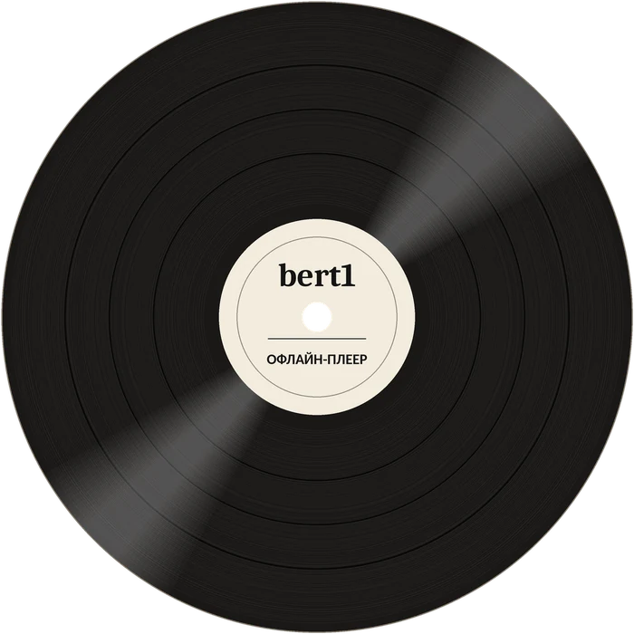
весит весь плеер
В этот файл помещается всё: интерфейс, эквалайзер, синтезатор для MIDI, справка и документы. Фреймворков нет, только HTML, CSS и JavaScript.
Подборки собираются сами
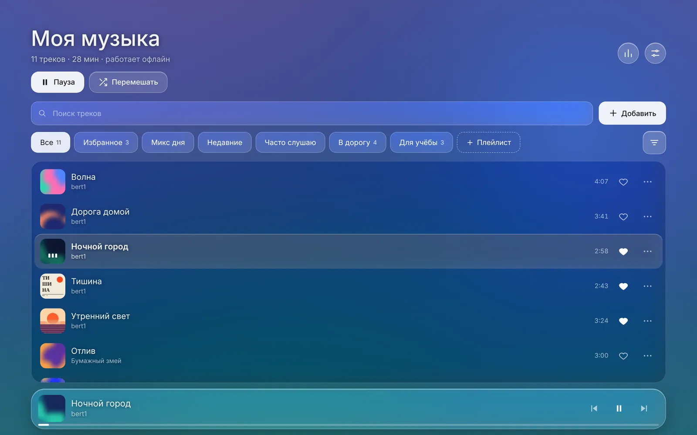
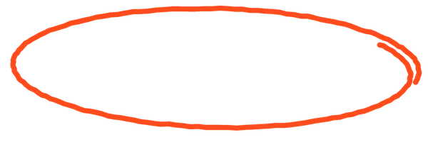
Микс дня
Каждый день новый набор. Любимые треки попадают в него чаще.
Недавние и Часто слушаю
Последние добавленные треки и те, что вы включали больше всего.
Свои плейлисты
Кнопка «+ Плейлист»: даёте название и отмечаете треки галочками.
Обложку можно смахнуть
Плеер удобно держать одной рукой. Нажмите на жест, чтобы увидеть его на экране.
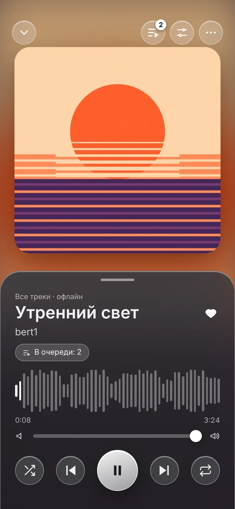
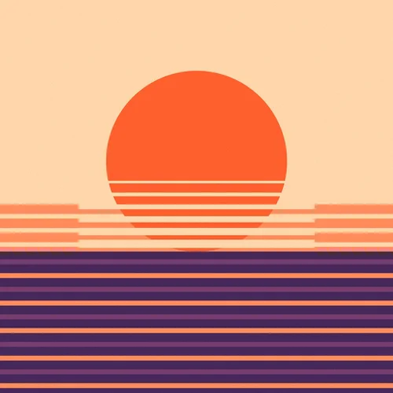
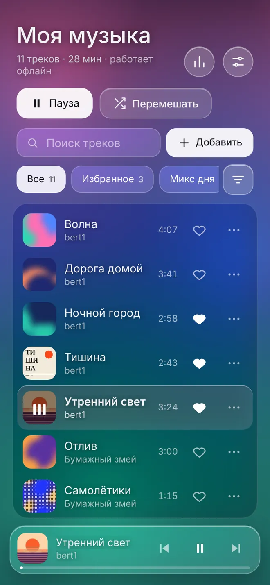
Что сыграет следующим
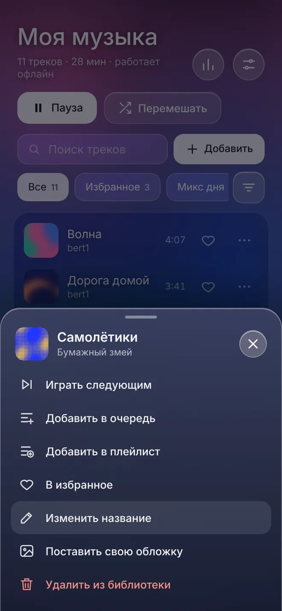
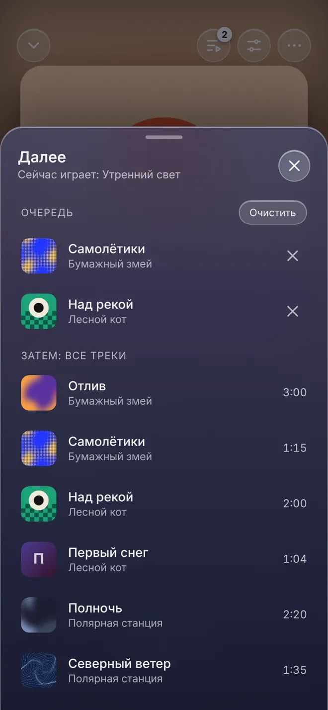
«Играть следующим» ставит трек первым в очередь.
Меню открывается тремя точками справа от трека или долгим нажатием на строку.
Кнопка со списком наверху плеера показывает, что будет дальше. Цифра на ней — сколько треков ждут.
Лишнее убирается крестиком. Нажмите на любой трек в списке, и он заиграет сразу.
Пластинка вместо обложки
Пока музыка играет, диск крутится и игла лежит на нём. На паузе игла поднимается.
Включается в настройках: «Вид плеера» → «Пластинка». Обложка трека становится наклейкой в центре диска. Работает в ночной и светлой теме.
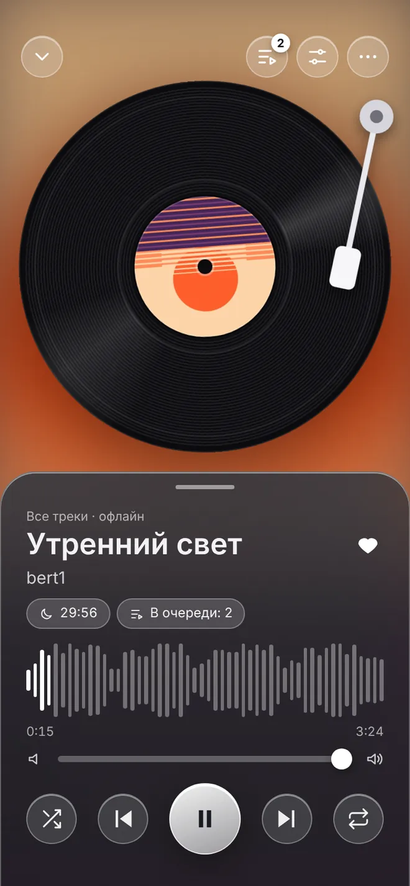
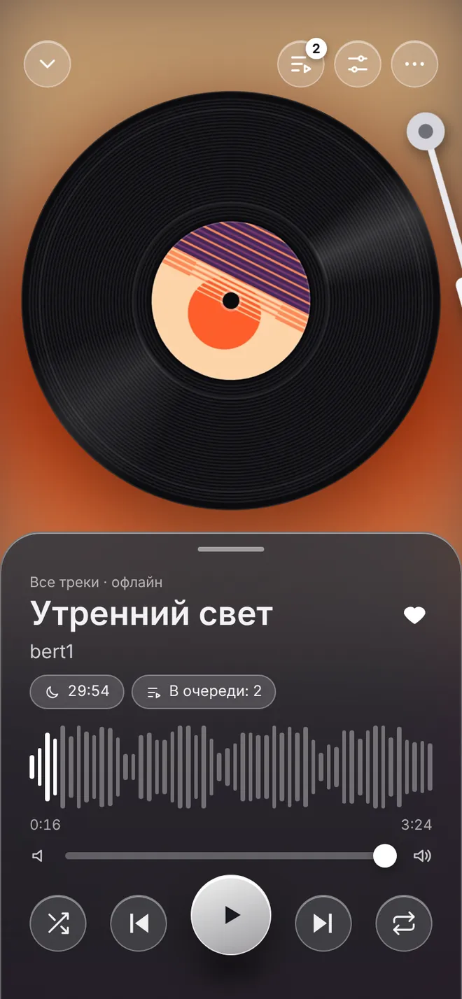
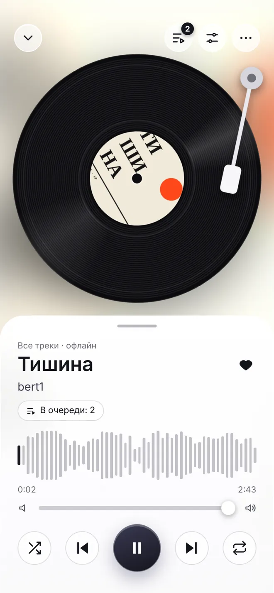
Что плеер помнит
Где вы остановились
Трек и секунду. В следующий раз на главной кнопке будет написано «Продолжить».
Сколько вы слушали
Часы за неделю, любимые треки, любимый исполнитель и дни подряд. Окно со статистикой открывается кнопкой с графиком.
Ваши списки
Плейлисты, очередь, избранное и названия треков, которые вы исправили сами.
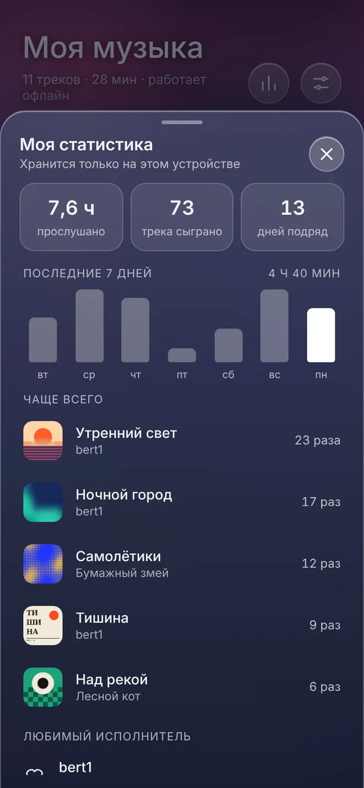
Можно уснуть под музыку
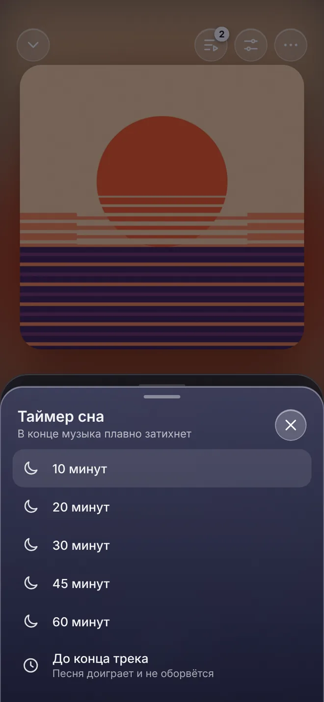
Выключит музыку сам
Через 10, 20, 30, 45 или 60 минут. Не нужно просыпаться, чтобы нажать паузу.
Или в конце трека
Песня доиграет до конца и не оборвётся на середине.
Затихает очень медленно
Последнюю минуту громкость уходит в ноль так плавно, что момент тишины не слышно.
Кнопка всегда на виду
«Таймер сна» стоит прямо под названием трека. Пока таймер идёт, на кнопке обратный отсчёт, а в последнюю минуту надпись «Затихает».
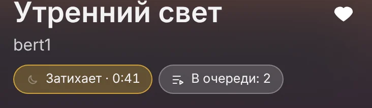
Если браузер не понял файл
Плеер пробует способы по очереди, пока трек не заиграет.
MIDIплеер озвучивает сам: у каждой ноты свой генератор звука.
33 расширения
файлов плеер принимает
Эквалайзер
10 полос от 31 Гц до 16 кГц, ±12 дБ. Попробуйте режимы:
Установка за минуту
Магазин приложений не нужен: плеер ставится прямо из браузера.
Откройте ссылку в Safari
Нажмите «Поделиться»
Выберите «На экран “Домой”»
Нажмите «Добавить»
Откройте ссылку в Chrome
Откройте меню с тремя точками
Нажмите «Установить приложение»
Подтвердите установку
Откройте ссылку в Chrome или Edge
Нажмите значок установки в адресной строке
Нажмите «Установить»
Плеер откроется в своём окне
После установки у плеера своя иконка, он открывается на весь экран, а музыкой можно управлять с экрана блокировки.
berezovskija124-ctrl.github.io/playeroficВсе функции
Всё, что умеет плеер, в одном месте.
Спасибо!
Жду ваших вопросов
Связь со мной — кнопка «Написать в Telegram» в настройках плеера.
bert1 · 2026